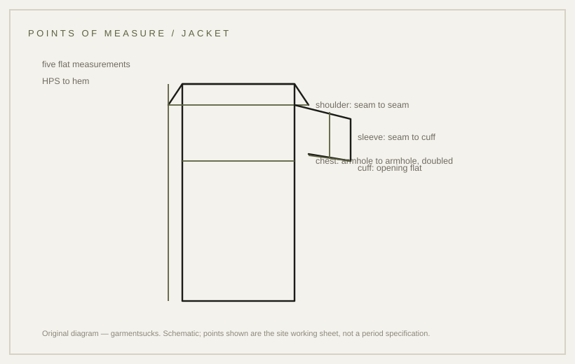

howto · —
The five flat measurements that describe a jacket
Five measurements decide whether a jacket reads correctly, before any styling begins.
probable Published 2026-11-13 · last checked 2026-11-13

1. Summary
Five flat measurements — chest, shoulder, body length, sleeve and cuff — describe a jacket well enough to compare one garment with another.
The figures used on this site are a reproduction working specification, not a period document. Confidence: probable — the method is standard practice; the numbers are a working sheet.
2. What this is
Point of measure (POM): a defined place on a garment where a tape is placed, so that two people measuring the same jacket get the same number. A flat measurement is taken with the garment closed and lying flat; a body measurement is taken on a person.
HPS is the high point of shoulder, the seam where the shoulder meets the collar. Half-chest is the chest measured across the front and doubled.
3. Standards and origin
Body measurement points are defined in standards: ISO 8559-1:2017 and ASTM D5219-15 both give named points and procedures. The standards themselves were not opened for this card; the definitions are cited through a published comparison that quotes them.
Flat garment measurement is a trade convention rather than one universal standard, which is why sellers publish their own measurement charts.
4. Tools and materials
A flexible, non-stretch tape measure; a flat surface large enough to lay the garment out; the garment itself, buttoned or zipped closed; a notepad or a spreadsheet to record the numbers in the same order each time.
No specialist tool is needed. A second pair of hands helps with long sleeves and with holding the tape level.
5. How it works: the five steps
1) Close the front and lay the jacket flat, smoothing out folds without stretching the cloth. 2) Chest: measure straight across from one armhole seam to the other at a fixed point below the armhole, then double it. 3) Shoulder: measure from shoulder seam to shoulder seam across the back. 4) Body length: measure from the HPS straight down to the hem. 5) Sleeve: measure from the shoulder seam to the cuff edge; cuff: measure the cuff opening flat.
Record the numbers in the same order every time. Consistency of method matters more than the exact figure: a jacket measured at a different point is not comparable.
6. Variants of measurement
| Measure | How taken | Use |
|---|---|---|
| Chest (flat) | armhole to armhole below the armhole, doubled | the first comparison between two jackets |
| Shoulder | seam to seam across the back | checks whether the shoulder line will sit on the wearer's shoulder |
| Body length | HPS to hem | reads as short, regular or long |
| Sleeve | shoulder seam to cuff | checks whether the cuff reaches the wrist |
| Cuff | cuff opening flat | checks whether it will close over a sleeve |
7. Telling a correct measurement from a wrong one
A correct chart states the points and whether chest is doubled. A wrong chart gives one number with no method, mixes body and flat measurements, or rounds inconsistently.
Check by measuring a garment you own and comparing it with the chart of the same size: if the numbers differ by more than the tolerance, the charts use different points.
8. Common mistakes
Measuring across the armpits instead of a fixed point below them; forgetting to double the chest; measuring a knit while stretched; mixing centimetres and inches; rounding one figure and not the next.
A fifth mistake is measuring a garment while it is hanging, which stretches the body and shortens the length.
9. How to read it in wear
Two jackets with the same chest can hang differently if the shoulder and length differ; the measurements read as a set, not as a single number.
10. Modern designer trail
Grading a collection means moving these points by fixed increments per size; the measurement sheet is where a design becomes a product. No direct-influence claim is made here.
11. Specification
The left column records what a source states; the right column is the site's working sheet.
| Recorded in sources | Reproduction suggestion |
|---|---|
| Body measurement points defined by ISO 8559-1:2017 and ASTM D5219-15 (standards not opened) | Chest 110 cm, shoulder 47 cm, body 73 cm |
| Flat garment measurement is a trade convention, not one universal standard | Sleeve 63 cm, cuff 13 cm (working sheet, size M) |
| — | Tolerance ±1 cm body, ±0.5 cm pockets |
12. Questions and exercises
1) Measure a jacket you own with the five steps and write the numbers down. 2) Measure it again tomorrow: do you get the same numbers? 3) Which of your numbers would you trust least, and why?

Glossary
- Point of measure
- Defined place where the tape is placed.
- HPS
- High point of shoulder, where shoulder meets collar.
- Half-chest
- Chest measured across and doubled.
- Tolerance
- Allowed variation around a target figure.
Sources
- [S1] [T1] ISO 8559-1:2017 and ASTM D5219-15 — body measurement points (specification-type sources; not opened, cited via a published comparison)
- [S2] [T3] Reproduction size charts (commercial) — working figures
Claims & sources
| Claim | Source | Tier | URL | Status |
|---|---|---|---|---|
| Body measurement points are defined by ISO 8559-1:2017 and ASTM D5219-15 | published comparison quoting the standards | T1 | link | partially verified (standards not opened) |
| Flat garment measurement is a trade convention, not one universal standard | no standard opened | — | inference | |
| Chest 110 / shoulder 47 / body 73 / sleeve 63 / cuff 13 cm | site working sheet | — | working specification, not a period document | |
| Tolerances ±1 cm body, ±0.5 cm pockets | site working sheet | — | working specification |